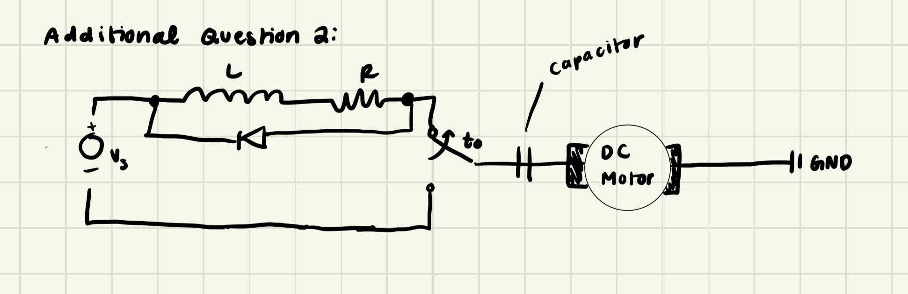
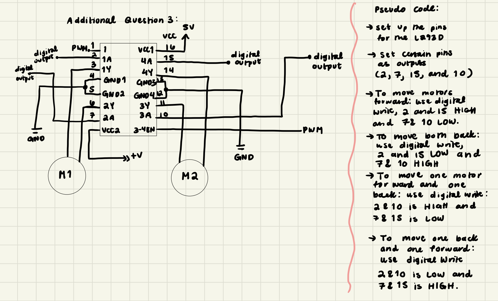

A5: High(er) and Transistors!
Introduction

For this assignment, I wored with and Arduino Uno, N-MOSFET, external power supply,
LED strip, and ultrasonic sensor. The N-MOSFET is used to control the brightness,
meanwhile the ultrasonic sensor is used to measure the distance. The concept of my
assignment is that the closer you are to the ultrasonic sensor, the brighter the
LED strip will be. As shown in the image above, this is the final presentation of my
circuit, demonstrating how the ultrasonic sensor and N-MOSFET work together to control
the brightness of the LED strip.
Schematic

The schematic above illustrates the connections between the ultrasonic sensor and arduino,
as well as the N-MOSFET and LED strip. The ultrasonic sensor is connected to pins 10 and 11 (PWM),
and the N-MOSFET is connected to pin 9 (PWM). The LED strip is powered by an external power supply.
Calculation

The calculations above demonstrate the amount of current and voltage the LED
strip will use.Based on the calculations, the LED strip operates at 12V, with an
estimated current of 8.75 mA. The MOSFET controls the current flow, ensuring the LED
strip receives the correct power while minimizing heat dissipation.
Code Structure
Take a look at my firmware below >
// A5: High(er) voltage and transistors!
// HCDE 439
// Prof. Nadya Peek
// Stacey Nguyen
// Defining the ultrasonic sensor pins
// The Trigger pin will be connected to pin 11
const int trigPin = 11;
// The Echo pin will be connected to pin 10
const int echoPin = 10;
// Defining the N-MOSFET transistor pin (PWM)
// The control pin (gate) will be connected to pin 9
const int nmosfetPin = 9;
void setup() {
// Setting the trigger from the ultrasonic as an output
pinMode(trigPin, OUTPUT);
// Setting the echo from the ultrasonic as an input
pinMode(echoPin, INPUT);
// Setting the N-MOSFET control pin as an output
pinMode(nmosfetPin, OUTPUT);
// Setting up the Serial monitor for it to start debugging
Serial.begin(9600);
}
void loop() {
// Ensuring that the ultrasonic sound pulse is functioning properly
// No sound pulse
digitalWrite(trigPin, LOW);
// for 2 microseconds
delayMicroseconds(2);
// Sound pulse on
digitalWrite(trigPin, HIGH);
// for 10 microseconds
delayMicroseconds(10);
// No sound pulse
digitalWrite(trigPin, LOW);
// Measuring the echo time
long duration = pulseIn(echoPin, HIGH);
// This mathematical step converts the duration into centimeters
int distance = duration * 0.034 / 2;
// The Serial Monitor will print "Distance: "
Serial.print("Distance in cm: ");
// Then it will print the distance in centimeters
Serial.print(distance);
// Mapping aka translating the distance so that it is ranging from 0-255
// Making that so closer you are to the ultrasonic, it will be brighter
int brightness = map(distance, 10, 100, 255, 0);
// Constrains the brightness to min 0 and max 255
brightness = constrain(brightness, 0, 255);
// Makes the LED to change in brightness based on the N-MOSFET
analogWrite(nmosfetPin, brightness);
// Adding delay to apply a smooth function
delay(200);
}
Let's See the Results!
Take a look at the LED strip in action!
Additional Questions
1: This is the datasheet for the n-mosfet
transistor: https://www.diodes.com/assets/Datasheets/DMT6009LCT.pdfLinks
to an external site.f What is the absolute maximum amount of current between
pins 2 and 3?
The max amount of current between pins 2 and 3 is 80A based on reading the datasheet.
2: 2: Draw a schematic for a circuit with using at least your arduino,
a DC motor, a flyback diode, and capacitors between power and ground. Find parts with
datasheets you could use for each of these schematic components.

The image above is the schematic for a circuit with using at least an arduino, DC motor, a
flyback diode, and capaciotr between power and ground.
3: Here is the datasheet for the L293D chip:
https://www.ti.com/product/L293DLinks to an external site.. Draw a
schematic using at least your arduino, this chip, and two motors.
Write (pseudo) code that shows how you would move the motors both forward,
both back, then one forward one back, and one back then forward.

The image above illustrates the schematic of the L293D chip, Arduino, and two motors as
well as the pseudo code.